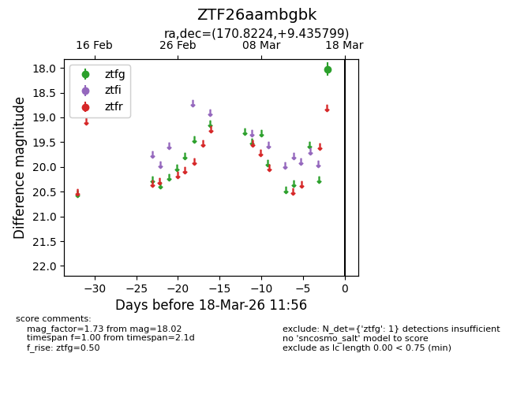
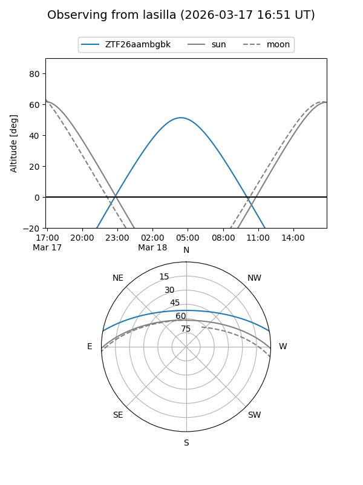
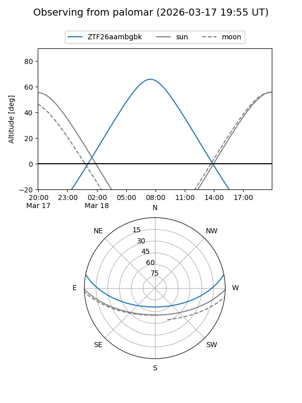

ZTF26aambgbk
Target ZTF26aambgbk at 2026-03-18 11:58
Aliases and brokers:
FINK: link
Lasair: link
ALeRCE: link
alt names
ZTF26aambgbk (ztf,fink_ztf)
Coordinates:
equatorial (ra, dec) = 170.8224,+9.43580
equatorial (HMS+DMS) = 11:23:17.37,+09:26:08.88
galactic (l, b) = (249.1471,+62.69282)
Flags:
Photometry:
last ztfg=18.02
1 ztfg detections
Lightcurve

Visibility


Additional plots